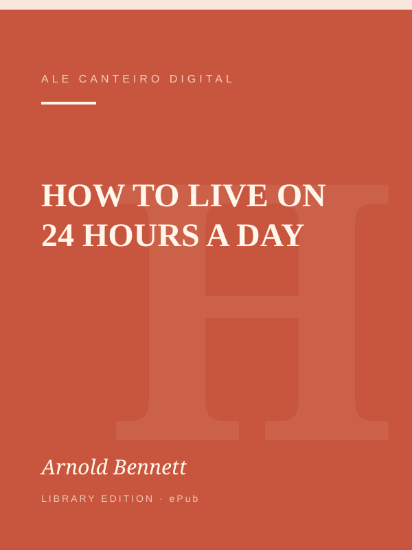
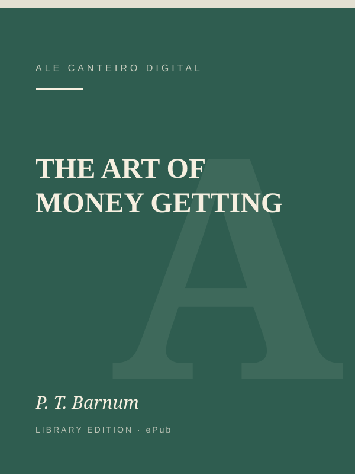
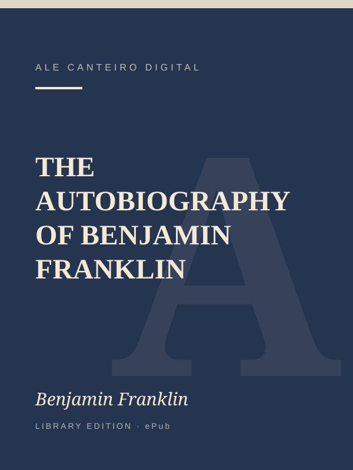

How to Live on 24 Hours a Day
Arnold Bennett · 1908 · Public domain · ePub
A short, practical guide to using your time well. Bennett shows how to reclaim the hours most people waste each day.
£5.99Buy now
We publish carefully selected public domain classics as clean, ready-to-read ePub files. Pay by card and your file is on its way within minutes.
Browse the library
Four titles to start. Each one is a digital ePub, with no physical delivery.
A short, practical guide to using your time well. Bennett shows how to reclaim the hours most people waste each day.

Golden rules for earning and keeping money, from one of the best-known showmen and businessmen of the 19th century.

The life story of a printer, inventor and statesman, and his famous method for building good habits.
Emerson’s landmark essays, including Self-Reliance, on independence of mind, trust in yourself and living by your own judgment.
Three simple steps.
Choose a book and press Buy now.
Checkout is handled securely by Stripe. We never see your card details.
We email the ePub download link to the address you used at checkout, within minutes.
Before you buy.
The standard ebook format. It opens on phones, tablets, e-readers and in free apps such as Apple Books or Calibre.
Yes, the original works are in the public domain. You are paying for a carefully prepared edition and for convenient delivery.
Normally within minutes of payment, by email. Check your spam folder if you do not see it.
For faulty files, non-delivery or duplicate charges, yes. See the refund policy.
ALE CANTEIRO DIGITAL LTD, a company registered in England and Wales (no. 16767917). See contact.